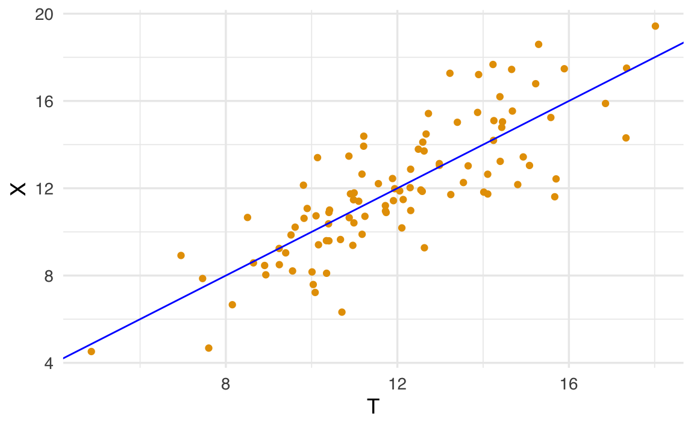

8 Fondamenti teorici
Prerequisiti
Leggere il capitolo 3, Reliability, del testo Principles of psychological assessment di Petersen (2024).
Si consiglia di ripassare i concetti fondamentali della teoria delle probabilità, in particolare le proprietà delle variabili aleatorie. Per approfondire, si rimanda al materiale didattico dell’insegnamento di Psicometria disponibile al seguente link.
Preparazione del Notebook
8.1 Introduzione
La Teoria Classica dei Test (CTT), sviluppata inizialmente da Spearman (1904) e formalizzata in seguito da Lord & Novick (1968), costituisce un pilastro della psicometria per la valutazione di caratteristiche psicologiche mediante strumenti quali test e questionari. Il principio fondante della CTT risiede nell’assunzione che il punteggio osservato di un individuo derivi dalla combinazione di due elementi: il punteggio vero, corrispondente al livello effettivo del tratto misurato, e un errore casuale insito nel processo di misurazione. Questo framework teorico offre un modello per stimare la discrepanza tra performance reale e risultato empirico, oltre a fornire strumenti per valutarne la precisione e l’affidabilità. Nonostante l’emergere di approcci avanzati come la Teoria della Risposta all’Item (IRT) e la Teoria della Generalizzabilità, la CTT mantiene un ruolo centrale nella progettazione, nell’interpretazione e nella validazione dei test psicometrici.
Fondamenti concettuali
Secondo la CTT, ogni risposta a un test è riconducibile all’equazione:
\[ X = T + E, \tag{8.1}\]
dove \(X\) rappresenta il punteggio osservato, \(T\) il punteggio vero (costante teorica) ed \(E\) l’errore di misurazione, inteso come componente stocastica a media nulla. Il punteggio vero riflette la competenza o il tratto latente del soggetto, mentre l’errore incorpora fattori contingenti (es. distrazioni, variabilità ambientali, limitazioni dello strumento) che influenzano la performance in modo non sistematico.
Implicazioni metodologiche
La teoria si concentra sull’analisi della varianza dei punteggi: attraverso indicatori statistici quali deviazione standard, coefficienti di affidabilità (es. alpha di Cronbach) e correlazioni tra item, quantifica la proporzione di variabilità attribuibile al costrutto rispetto al rumore sperimentale. Questa analisi guida la standardizzazione dei test, l’ottimizzazione del numero di item e la stima dell’intervallo di confidenza per i punteggi veri. Pur non modellando esplicitamente la difficoltà degli item o i tratti latenti (come avviene nell’IRT), la CTT rimane indispensabile per la valutazione psicometrica di base, garantendo rigore nella costruzione degli strumenti e nell’interpretazione dei dati.
8.2 Costrutti in Psicometria
Un costrutto è un concetto teorico, tipicamente latente e non direttamente osservabile, che rappresenta una caratteristica psicologica, sociale o comportamentale (Petersen, 2024). Esempi emblematici includono depressione, intelligenza o autostima: questi fenomeni non possono essere misurati in modo diretto, ma vengono inferiti attraverso indicatori osservabili (es. risposte a item di un test, comportamenti registrati). La validità di un costrutto dipende dalla sua definizione teorica e dalla capacità degli indicatori di rappresentarlo in modo coerente.
8.2.1 Tipologie di Costrutti
La letteratura distingue due categorie fondamentali, con implicazioni metodologiche divergenti (Bollen & Lennox, 1991):
8.2.1.1 Costrutti Riflessivi
-
Definizione: Il costrutto latente causa le manifestazioni osservate. Gli indicatori riflettono variazioni nel tratto sottostante.
-
Esempio: L’estroversione si manifesta attraverso comportamenti come “partecipare attivamente a eventi sociali” o “preferire conversazioni con sconosciuti”.
-
Proprietà:
-
Correlazioni attese: Gli indicatori mostrano covarianze sistematiche (es. alta consistenza interna, misurata tramite alpha di Cronbach).
-
Intercambiabilità: Gli item sono replicabili (rimuovere un indicatore non compromette la definizione del costrutto).
- Modelli statistici: Richiedono approcci che catturino la varianza comune (analisi fattoriale confirmatoria, modelli SEM, IRT).
-
Correlazioni attese: Gli indicatori mostrano covarianze sistematiche (es. alta consistenza interna, misurata tramite alpha di Cronbach).
8.2.1.2 Costrutti Formativi
-
Definizione: Gli indicatori definiscono il costrutto, agendo come cause dirette. Il costrutto è una sintesi delle sue componenti.
-
Esempio: Lo status socioeconomico (SES) emerge dalla combinazione di educazione, reddito e prestigio occupazionale.
-
Proprietà:
-
Assenza di correlazioni: Gli indicatori possono essere indipendenti (es. reddito e educazione non necessariamente covariano).
-
Completezza: L’omissione di un indicatore altera la definizione del costrutto (es. escludere il reddito distorce la misura del SES).
-
Rischi statistici: Alte correlazioni tra indicatori generano multicollinearità, compromettendo regressioni o modelli a equazioni strutturali.
- Modelli statistici: Punteggi sommativi, indici pesati o modelli SEM con relazioni causali esplicite.
-
Assenza di correlazioni: Gli indicatori possono essere indipendenti (es. reddito e educazione non necessariamente covariano).
8.2.2 Confronto Sistematico
| Caratteristica | Costrutti Riflessivi | Costrutti Formativi |
|---|---|---|
| Natura causale | Costrutto → Indicatori | Indicatori → Costrutto |
| Correlazioni | Attese e desiderabili | Non necessarie, talvolta indesiderate |
| Campionamento | Item intercambiabili | Item essenziali e non ridondanti |
| Obiettivo statistico | Massimizzare varianza comune | Sintetizzare informazioni multiple |
8.2.3 Implicazioni per la Stima
La scelta del metodo di misurazione deve allinearsi alla natura teorica del costrutto:
- Per costrutti riflessivi, modelli basati sulla covarianza (es. analisi fattoriale) identificano la struttura latente sottostante.
- Per costrutti formativi, approcci compositi (es. punteggi sommativi) o modelli causali (SEM formativo) sono più appropriati.
Sintesi critica: L’ambiguità nella classificazione di un costrutto (riflessivo vs. formativo) può portare a errori metodologici gravi, come l’uso improprio dell’alpha di Cronbach per costrutti formativi. La chiarezza concettuale e il rigore teorico sono prerequisiti per una misurazione valida.
8.3 L’Equazione Fondamentale della CTT
La Teoria Classica dei Test (CTT) descrive il modo in cui i punteggi ottenuti da un test psicometrico siano legati a un costrutto latente che si intende misurare. Un concetto centrale nella CTT è quello dell’affidabilità, ovvero la capacità del test di produrre risultati coerenti e stabili nel tempo e in differenti condizioni di misurazione. Tale concetto è chiarito dall’equazione fondamentale della CTT, l’Equazione 8.1.
8.3.1 Le due componenti del punteggio osservato
L’equazione fondamentale evidenzia che ogni punteggio osservato (\(X\)) può essere scomposto in due componenti principali:
- Punteggio vero (\(T\)): rappresenta il valore reale, non influenzato da errori, della caratteristica o del costrutto misurato.
- Errore di misurazione (\(E\)): rappresenta tutte le variazioni casuali che influenzano la misura e impediscono al punteggio osservato di coincidere esattamente con quello vero.
8.3.2 Errore standard di misurazione
Un aspetto di particolare importanza nella CTT riguarda la varianza dell’errore di misurazione. Più grande è tale varianza, minore sarà la precisione con cui il punteggio vero è rappresentato dal punteggio osservato. Idealmente, se l’errore di misurazione fosse nullo, ogni punteggio osservato corrisponderebbe esattamente al punteggio vero. Tuttavia, nella realtà, gli errori di misurazione sono inevitabili.
La deviazione standard dell’errore di misurazione è chiamata errore standard di misurazione e indicata con \(\sigma_E\). Questa quantità misura la dispersione dei punteggi osservati intorno al punteggio vero dovuta agli errori casuali di misurazione. Uno degli obiettivi principali della CTT è proprio stimare \(\sigma_E\) per valutare la qualità di una scala psicometrica.
8.3.3 Affidabilità e precisione del test
L’affidabilità nella CTT è definita come il rapporto tra la varianza dei punteggi veri e la varianza totale dei punteggi osservati. Un’alta affidabilità indica una bassa incidenza degli errori casuali di misurazione (ossia un piccolo valore di \(\sigma_E\)), garantendo quindi che il punteggio osservato (\(X\)) sia una misura accurata del punteggio vero (\(T\)). Al contrario, una bassa affidabilità implica una grande incertezza nella misura, evidenziando una significativa discrepanza tra il punteggio osservato e il punteggio vero.
Nelle sezioni successive, esploreremo come il concetto di affidabilità nella CTT sia correlato al coefficiente di determinazione (\(R^2\)) utilizzato nella regressione lineare. Inoltre, vedremo come l’errore standard di misurazione nella CTT sia analogo all’errore standard della stima nel modello statistico della regressione.
8.3.4 Il punteggio vero
Secondo l’Equazione 8.1, il punteggio osservato risulta dalla combinazione di due componenti: una sistematica, cioè il punteggio vero, e una aleatoria, rappresentata dall’errore di misurazione. Ma cosa si intende esattamente con il concetto di punteggio vero? La Teoria Classica dei Test (CTT) propone diverse interpretazioni complementari.
Dal punto di vista psicologico, la CTT interpreta un test come una selezione casuale di domande estratte da un insieme più ampio che riflette il costrutto che si vuole misurare (Kline, 2013; Nunnally, 1994). In questa prospettiva, il punteggio vero corrisponde al risultato che un partecipante otterrebbe rispondendo all’intero insieme di domande. L’errore di misurazione rappresenta dunque quanto le specifiche domande selezionate casualmente si discostano dalla totalità delle domande relative al costrutto.
In modo analogo, il punteggio vero può essere visto come il risultato della misurazione ideale, cioè non influenzata da fattori estranei al costrutto di interesse, come l’apprendimento durante il test, la fatica, la memoria o la motivazione del soggetto. Poiché la componente aleatoria (errore) è considerata un processo casuale, essa non introduce alcun bias sistematico; infatti, per definizione, la media di \(E\) è uguale a zero.
Da un punto di vista statistico, il punteggio vero è una quantità teorica, non osservabile direttamente, che rappresenta il valore atteso (media) delle misurazioni ottenute somministrando ripetutamente il test allo stesso individuo nelle medesime condizioni:
\[ T = \mathbb{E}(X) \equiv \mu_X \equiv \mu_{T}. \]
Integrando le definizioni precedenti, Lord & Novick (1968) definiscono il punteggio vero come il punteggio medio che un individuo otterrebbe se il test fosse somministrato ripetutamente nelle stesse condizioni, escludendo ogni effetto di apprendimento o affaticamento.
8.3.5 Somministrazioni ripetute
Nella Teoria Classica dei Test (CTT) è possibile distinguere due approcci sperimentali complementari: uno in cui ciascun individuo costituisce un’unità di osservazione che varia casualmente all’interno di un campione, e un altro in cui il punteggio ottenuto da un singolo individuo viene trattato come una variabile casuale derivante da ripetute somministrazioni teoriche dello stesso test. Combinare questi due approcci consente di generalizzare i risultati della CTT—originariamente formulata ipotizzando molteplici somministrazioni immaginarie dello stesso test allo stesso individuo, in condizioni identiche—al caso pratico di una singola somministrazione del test a un campione di individui (Allen & Yen, 2001).
Questa generalizzazione si basa sull’assunzione ergodica, la quale consente di considerare la variabilità derivante da somministrazioni ripetute dello stesso test su un singolo individuo come rappresentativa della variabilità tra individui differenti in un unico momento temporale. L’assunzione ergodica è valida se sono soddisfatte le seguenti condizioni:
Omogeneità: tutti gli individui nel campione condividono le stesse proprietà fondamentali del costrutto misurato. Ciò implica che le differenze osservate tra individui non riflettono variazioni sostanziali del costrutto, bensì derivano principalmente dalla variabilità casuale o dall’errore di misurazione.
Stabilità: le caratteristiche individuali misurate dal test rimangono costanti nel tempo durante le ipotetiche somministrazioni ripetute. Pertanto, eventuali variazioni osservate in misurazioni successive dello stesso individuo sono attribuibili esclusivamente all’errore di misura e non a effettivi cambiamenti nel costrutto.
Quando queste condizioni sono rispettate, le principali quantità definite dalla CTT acquisiscono un’interpretazione empirica valida anche in una singola somministrazione a un campione di individui. In particolare:
- \(\sigma^2_X\) corrisponde alla varianza dei punteggi osservati nel campione o nella popolazione;
- \(\sigma^2_T\) corrisponde alla varianza dei punteggi veri, rappresentando la reale differenza tra individui nella popolazione;
- \(\sigma^2_E\) rappresenta la varianza degli errori di misurazione nella popolazione.
L’assunzione ergodica, quindi, permette di inferire proprietà della popolazione partendo dalla variabilità osservata in singoli individui, e viceversa, considerando che la variabilità intra-individuale (somministrazioni ripetute su un singolo individuo) e quella inter-individuale (tra individui diversi) siano comparabili sotto le condizioni descritte.
8.3.6 Le assunzioni sul punteggio ottenuto
La Teoria Classica dei Test (CTT) assume che il valore atteso del punteggio osservato \(X\) sia uguale al valore atteso del punteggio vero \(T\):
\[ \mu_X \equiv \mu_{T}, \tag{8.2}\]
Ciò significa che, in media, il punteggio osservato fornisce una stima accurata del punteggio vero (abilità latente). Tuttavia, nella pratica, ogni singolo punteggio osservato sarà influenzato da un errore di misurazione, per cui non coinciderà mai esattamente con il punteggio vero:
\[ E \equiv X - T. \]
Data l’assunzione che i punteggi osservati siano mediamente uguali ai punteggi veri, ne consegue che l’errore di misurazione ha valore atteso pari a zero:
\[ \mathbb{E}(E) = \mathbb{E}(X - T) = \mathbb{E}(X) - \mathbb{E}(T) = \mu_{T} - \mu_{T} = 0. \]
In altre parole, gli errori di misurazione non introducono alcun bias sistematico, ma solo variazione casuale.
8.4 Assiomi della Teoria Classica
La CTT assume che gli errori siano delle variabili casuali incorrelate tra loro
\[ \rho(E_i, E_k \mid T) = 0, \qquad\text{con}\; i \neq k, \]
e incorrelate con il punteggio vero,
\[ \rho(E, T) = 0, \]
le quali seguono una distribuzione gaussiana con media zero e deviazione standard pari a \(\sigma_E\):
\[ E \sim \mathcal{N}(0, \sigma_E). \]
La quantità \(\sigma_E\) è appunto l’errore standard della misurazione. Sulla base di tali assunzioni la CTT deriva la formula dell’attendibilità di un test. Si noti che le assunzioni della CTT hanno una corrispondenza puntuale con le assunzioni su cui si basa il modello di regressione lineare.
8.5 Simulazione empirica
Per chiarire ulteriormente queste idee, consideriamo la seguente simulazione realizzata con il software \(\textsf{R}\). In questa simulazione, i punteggi veri (\(T\)) e gli errori di misurazione (\(E\)) sono generati rispettando le condizioni della CTT, ovvero:
- \(T\) ed \(E\) sono variabili casuali Gaussiane;
- \(T\) ed \(E\) sono tra loro indipendenti (covarianza nulla);
- Il valore atteso di \(E\) è zero.
Generiamo un campione di 100 osservazioni con i seguenti parametri:
- \(T \sim \mathcal{N}(\mu_T = 12, \sigma^2_T = 6)\)
- \(E \sim \mathcal{N}(\mu_E = 0, \sigma^2_E = 3)\)
Utilizzando l’opzione empirical = TRUE, otteniamo un campione in cui le medie e le covarianze sono esattamente quelle specificate. Possiamo quindi interpretare questo insieme di dati come rappresentativo di una “popolazione”.
Il punteggio osservato viene simulato come \(X = T + E\):
X <- T + ELe prime sei osservazioni sono le seguenti:
tibble(X, T, E) |> head()
#> # A tibble: 6 × 3
#> X T E
#> <dbl> <dbl> <dbl>
#> 1 15.7 16.8 -1.07
#> 2 13.7 12.2 1.41
#> 3 6.73 7.85 -1.12
#> 4 14.6 14.2 0.388
#> 5 10.6 10.2 0.420
#> 6 12.4 13.3 -0.960Il seguente diagramma di dispersione mostra la relazione tra punteggi veri e osservati:
tibble(X, T) |>
ggplot(aes(T, X)) +
geom_point(position = position_jitter(w = .3, h = .3)) +
geom_abline(col = "blue")
Verifichiamo le assunzioni della CTT per i dati dell’esempio:
cor(E, T)
#> [1] -4.229e-17Verifichiamo che la media dei punteggi veri e dei punteggi osservati siano uguali:
Verifichiamo anche che l’errore di misurazione abbia valore medio zero:
mean(E)
#> [1] -8.882e-17Le varianze dei punteggi veri, dei punteggi osservati e degli errori sono rispettivamente
coerentemente con i valori usati nella simulazione.
8.6 L’errore standard della misurazione (\(\sigma_E\))
L’errore standard della misurazione (\(\sigma_E\)) è un concetto fondamentale della CTT. Si tratta della deviazione standard degli errori di misurazione e indica la precisione con cui un test riflette il punteggio vero di un individuo. In termini pratici, \(\sigma_E\) rappresenta la quantità media di variazione attesa nei punteggi osservati qualora il test fosse somministrato ripetutamente allo stesso individuo, nelle medesime condizioni (senza effetti di apprendimento o affaticamento).
Un test con un valore basso di \(\sigma_E\) sarà considerato altamente preciso, poiché i punteggi osservati tenderanno a variare poco intorno al punteggio vero. Viceversa, un valore elevato di \(\sigma_E\) indica una maggiore variabilità dei punteggi osservati, riflettendo una minore precisione nella misura.
La stima di questo errore è uno degli obiettivi principali della CTT, perché permette di quantificare l’affidabilità del test.
Nel nostro esempio, l’errore standard della misurazione viene calcolato come segue:
Questo valore rappresenta quindi la quantità attesa di variazione del punteggio osservato nel caso di somministrazioni ripetute dello stesso test alla medesima persona, nelle stesse condizioni.
8.7 Quattro Livelli di Misurazione nella CTT
Nella Teoria Classica dei Test (CTT), le misure della stessa entità (item, sottoscale o test) possono essere classificate secondo quattro livelli gerarchici di similarità, dal più al meno restrittivo: misure parallele, misure τ-equivalenti, misure essenzialmente τ-equivalenti e misure congeneriche. Questa gerarchia riflette i vincoli progressivamente minori sulle caratteristiche delle misure.
La similarità tra due misure è definita dalla relazione tra i punteggi veri (\(t_i\) e \(t_j\)):
\[ t_i = a_{ij} + b_{ij} t_j , \]
dove:
- \(a_{ij}\): differenza sistematica nelle medie tra le misure (intercetta);
- \(b_{ij}\): differenza di scala rispetto al costrutto latente misurato (pendenza).
8.7.1 Misure parallele
Le misure parallele soddisfano tre condizioni fondamentali:
- Medie dei punteggi veri uguali (\(a_{ij} = 0\)).
- Varianze dei punteggi veri uguali (\(b_{ij} = 1\)).
- Varianze degli errori di misura uguali.
Perché la differenza di intercetta (\(a_{ij}\)) corrisponde a una differenza di media?
Quando aggiungi un termine costante \(a_{ij}\) a un punteggio latente \(t_j\), stai semplicemente spostando in alto o in basso tutti i valori di \(t_j\) della stessa quantità. Questo spostamento costante equivale a cambiare la “posizione” della distribuzione dei punteggi, senza però modificarne la forma (cioè senza modificare deviazione standard o varianza).
- Se \(a_{ij} = 0\), non c’è spostamento: le due misure hanno la stessa media.
- Se \(a_{ij} \neq 0\), la media di \(t_i\) risulterà traslata rispetto alla media di \(t_j\) proprio di \(a_{ij}\).
In formula, la media di \(t_i\) diventa:
\[ \mathbb{E}[t_i] \;=\; \mathbb{E}[a_{ij} + b_{ij}\,t_j] \;=\; a_{ij} + b_{ij} \, \mathbb{E}[t_j]. \]
Se \(b_{ij} = 1\), allora \(\mathbb{E}[t_i] = a_{ij} + \mathbb{E}[t_j]\), e \(a_{ij}\) è precisamente lo scostamento nella media.
Perché la differenza di pendenza (\(b_{ij}\)) corrisponde a una differenza di varianza?
La pendenza \(b_{ij}\) agisce come un fattore di scala sul punteggio \(t_j\). Quando un punteggio viene moltiplicato per un coefficiente \(b_{ij}\), l’ampiezza (o dispersione) della distribuzione cambia. Più formalmente, la varianza di \(t_i\) è data da:
\[ \mathrm{Var}(t_i) \;=\; \mathrm{Var}(a_{ij} + b_{ij}\, t_j) \;=\; \mathrm{Var}(b_{ij}\, t_j) \;=\; b_{ij}^2 \,\mathrm{Var}(t_j), \]
perché l’aggiunta di un termine costante (\(a_{ij}\)) non influisce mai sulla varianza, mentre la moltiplicazione per una costante (\(b_{ij}\)) la cambia in modo proporzionale al quadrato di tale costante (\(b_{ij}^2\)).
- Se \(b_{ij} = 1\), la varianza di \(t_i\) coincide esattamente con la varianza di \(t_j\): non c’è alcun cambiamento di scala.
- Se \(b_{ij} \neq 1\), la varianza di \(t_i\) viene “riscalata” di \(b_{ij}^2\). Di conseguenza, le due misure avranno una diversa dispersione (cioè una diversa “ampiezza” nella distribuzione dei punteggi veri).
Conclusioni.
- \(a_{ij}\) rappresenta uno “shift” costante: indica quanto le due misure differiscono in termini di media (posizione della distribuzione).
- \(b_{ij}\) rappresenta un fattore di scala: indica quanto le due misure differiscono in termini di varianza (grandezza o dispersione della distribuzione).
Questi due aspetti sono centrali nella definizione dei livelli di similarità fra misure in CTT:
-
Misure parallele richiedono nessuna differenza di media (quindi \(a_{ij}=0\)) e nessuna differenza di varianza (quindi \(b_{ij}=1\)), oltre a errori di misura uguali.
- Strutture meno restrittive (τ-equivalenti, essenzialmente τ-equivalenti, congeneriche) permettono sempre più libertà nei valori di \(a_{ij}\) e \(b_{ij}\).
Ecco perché, nel caso delle misure parallele, il requisito è che non ci sia né uno shift costante (\(a_{ij} = 0\)) né un fattore di riscalamento (\(b_{ij} = 1\)), in modo che i due test condividano media e varianza vera, oltre ad avere la stessa precisione di misura (varianza d’errore).
Simulazione in R:
8.7.2 Misure τ-equivalenti
Le misure τ-equivalenti soddisfano:
- Medie dei punteggi veri uguali (\(a_{ij} = 0\)).
- Varianze dei punteggi veri uguali (\(b_{ij} = 1\)).
- Possibile differenza nelle varianze degli errori di misura.
Simulazione in R:
8.7.3 Misure essenzialmente τ-equivalenti
Le misure essenzialmente τ-equivalenti permettono:
- Differenze sistematiche nelle medie dei punteggi veri (\(a_{ij} \neq 0\)).
- Varianze dei punteggi veri uguali (\(b_{ij} = 1\)).
- Differenze nelle varianze degli errori di misura.
Simulazione in R:
8.7.4 Misure congeneriche
Le misure congeneriche sono il modello più generale e consentono:
- Differenze sistematiche nelle medie dei punteggi veri (\(a_{ij} \neq 0\)).
- Differenze nella scala dei punteggi veri (\(b_{ij} \neq 1\)).
- Differenze nelle varianze degli errori di misura.
Simulazione in R:
Queste simulazioni permettono di comprendere chiaramente le implicazioni pratiche e teoriche dei diversi livelli di similarità nella misurazione secondo la CTT.
8.8 Riflessioni Conclusive
Questo capitolo ha offerto una panoramica dei concetti chiave della teoria classica dei test (CTT) e ha introdotto quattro tipi di misure psicometriche. Le misure parallele si distinguono per l’elevata somiglianza nei punteggi veri, garantendo che le varianze siano uguali per tutte le misure. Le misure τ-equivalenti condividono questa equivalenza nelle varianze dei punteggi veri, ma non richiedono una somiglianza così stretta come le misure parallele. Le misure essenzialmente τ-equivalenti tollerano una maggiore variabilità nei punteggi veri, pur mantenendo la coerenza dei risultati. Infine, le misure congeneriche presentano le minori restrizioni tra le quattro tipologie, consentendo differenze sia nelle medie sia nelle varianze dei punteggi veri.
Comprendere le differenze tra queste tipologie di misure è fondamentale per valutare l’affidabilità e la validità di un test e per interpretare in modo accurato i risultati. Nelle prossime sezioni della dispensa, approfondiremo l’applicazione pratica della CTT nello sviluppo e nella valutazione dei test psicometrici. Per un’esplorazione più dettagliata, si rimanda alle letture di riferimento: McDonald (2013) e Lord & Novick (1968).
8.9 Session Info
sessionInfo()
#> R version 4.4.2 (2024-10-31)
#> Platform: aarch64-apple-darwin20
#> Running under: macOS Sequoia 15.3.2
#>
#> Matrix products: default
#> BLAS: /Library/Frameworks/R.framework/Versions/4.4-arm64/Resources/lib/libRblas.0.dylib
#> LAPACK: /Library/Frameworks/R.framework/Versions/4.4-arm64/Resources/lib/libRlapack.dylib; LAPACK version 3.12.0
#>
#> locale:
#> [1] C/UTF-8/C/C/C/C
#>
#> time zone: Europe/Rome
#> tzcode source: internal
#>
#> attached base packages:
#> [1] stats graphics grDevices utils datasets methods base
#>
#> other attached packages:
#> [1] modelsummary_2.3.0 ggokabeito_0.1.0 see_0.11.0
#> [4] MASS_7.3-65 viridis_0.6.5 viridisLite_0.4.2
#> [7] ggpubr_0.6.0 ggExtra_0.10.1 gridExtra_2.3
#> [10] patchwork_1.3.0 bayesplot_1.11.1 semTools_0.5-6
#> [13] semPlot_1.1.6 lavaan_0.6-19 psych_2.4.12
#> [16] scales_1.3.0 markdown_1.13 knitr_1.50
#> [19] lubridate_1.9.4 forcats_1.0.0 stringr_1.5.1
#> [22] dplyr_1.1.4 purrr_1.0.4 readr_2.1.5
#> [25] tidyr_1.3.1 tibble_3.2.1 ggplot2_3.5.1
#> [28] tidyverse_2.0.0 here_1.0.1
#>
#> loaded via a namespace (and not attached):
#> [1] rstudioapi_0.17.1 jsonlite_1.9.1 magrittr_2.0.3
#> [4] TH.data_1.1-3 estimability_1.5.1 farver_2.1.2
#> [7] nloptr_2.2.1 rmarkdown_2.29 vctrs_0.6.5
#> [10] minqa_1.2.8 base64enc_0.1-3 rstatix_0.7.2
#> [13] htmltools_0.5.8.1 broom_1.0.7 Formula_1.2-5
#> [16] htmlwidgets_1.6.4 plyr_1.8.9 sandwich_3.1-1
#> [19] emmeans_1.10.7 zoo_1.8-13 igraph_2.1.4
#> [22] mime_0.13 lifecycle_1.0.4 pkgconfig_2.0.3
#> [25] Matrix_1.7-3 R6_2.6.1 fastmap_1.2.0
#> [28] rbibutils_2.3 shiny_1.10.0 digest_0.6.37
#> [31] OpenMx_2.21.13 fdrtool_1.2.18 colorspace_2.1-1
#> [34] rprojroot_2.0.4 Hmisc_5.2-3 labeling_0.4.3
#> [37] timechange_0.3.0 abind_1.4-8 compiler_4.4.2
#> [40] withr_3.0.2 glasso_1.11 htmlTable_2.4.3
#> [43] backports_1.5.0 carData_3.0-5 ggsignif_0.6.4
#> [46] corpcor_1.6.10 gtools_3.9.5 tools_4.4.2
#> [49] pbivnorm_0.6.0 foreign_0.8-88 zip_2.3.2
#> [52] httpuv_1.6.15 nnet_7.3-20 glue_1.8.0
#> [55] quadprog_1.5-8 nlme_3.1-167 promises_1.3.2
#> [58] lisrelToR_0.3 grid_4.4.2 checkmate_2.3.2
#> [61] cluster_2.1.8.1 reshape2_1.4.4 generics_0.1.3
#> [64] gtable_0.3.6 tzdb_0.5.0 data.table_1.17.0
#> [67] hms_1.1.3 car_3.1-3 tables_0.9.31
#> [70] sem_3.1-16 pillar_1.10.1 rockchalk_1.8.157
#> [73] later_1.4.1 splines_4.4.2 lattice_0.22-6
#> [76] survival_3.8-3 kutils_1.73 tidyselect_1.2.1
#> [79] miniUI_0.1.1.1 pbapply_1.7-2 reformulas_0.4.0
#> [82] stats4_4.4.2 xfun_0.51 qgraph_1.9.8
#> [85] arm_1.14-4 stringi_1.8.4 yaml_2.3.10
#> [88] pacman_0.5.1 boot_1.3-31 evaluate_1.0.3
#> [91] codetools_0.2-20 mi_1.1 cli_3.6.4
#> [94] RcppParallel_5.1.10 rpart_4.1.24 xtable_1.8-4
#> [97] Rdpack_2.6.3 munsell_0.5.1 Rcpp_1.0.14
#> [100] coda_0.19-4.1 png_0.1-8 XML_3.99-0.18
#> [103] parallel_4.4.2 jpeg_0.1-10 lme4_1.1-36
#> [106] mvtnorm_1.3-3 openxlsx_4.2.8 rlang_1.1.5
#> [109] multcomp_1.4-28 mnormt_2.1.1